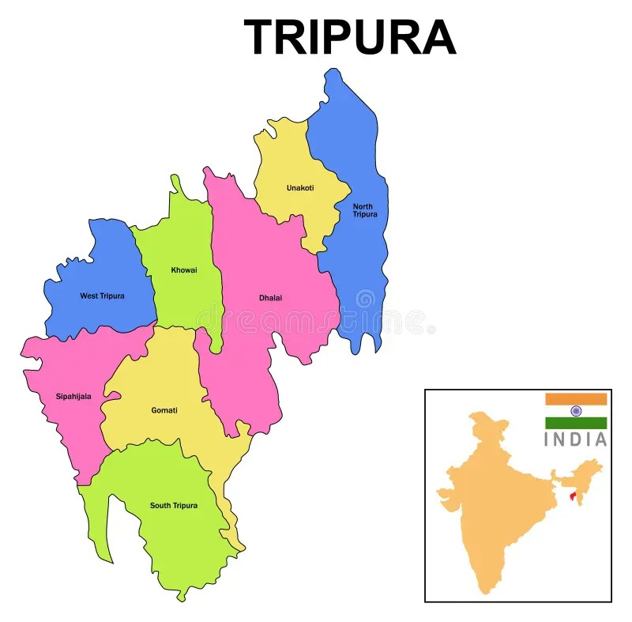

| Name: | Tripura |
|---|---|
| Capital: | Agartala |
| Language: | Bengali, Kokborok |
| Chief Minister: | Biplab Kumar Deb |
| Total Districts: | 8 |
| Population: | ~3.7 million (as per 2011 census) |
| Formation: | 21 January 1972 |
| Area: | 10,491 km² (28th largest in India) |
| Borders: | Assam, Mizoram, Bangladesh |
| Coastline: | None (Landlocked State) |
Know more